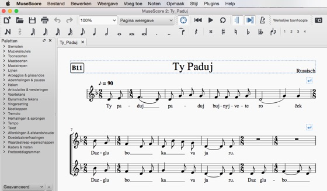

MuseScore
Hier kun je van een aantal liederen de bladmuziek ophalen
in MuseScore formaat.
MuseScore is een programma om bladmuziek te maken,
te beluisteren en af te drukken.
Om MuseScore te kunnen gebruiken moet je het eerst op je computer installeren.
Je kunt het vinden musescore.org.
Het is beschikbaar voor Windows, Mac en andere platforms.
Nadat je hebt ovegehaald ("gedownload") en geïnstalleerd kun je de mscz bestanden hieronder gebruiken
om de muziek af te spelen.
Met de Mixer van het menu Weergave kun je ook apart
naar de partij van je eigen stemgroep luisteren.

Stille Nacht: stillenacht.mscz
Todos los bienes: todos.mscz
Bogoroditse Devo: bogoroditse.mscz
Tebe pojem (Rachmaninov): teberach.mscz
Ukolebavka: ukolebavka.mscz
Santa Maria strela do dia: maria.mscz
Adio Kerida: adiokerida.mscz
Olijven vallen: olijven.mscz
Boroech Ate: boroech.mscz
Polegala: polegala.mscz
Daar is de lente: lente.mscz
Step da step krugom: step.mscz
Ejder ich lejg mich: ejder.mscz
Ty paduj: typaduj.mscz
Erev shell shoshanim: erev.mscz
Vecher: vecher.mscz
Gorani: gorani.mscz
Waar bleeft ge: waar.mscz
Koszonto: koszonto.mscz
Za dvinoj: zadvinoj.mscz
Mnogaja ljeta: mnogaja.mscz
Shier Noded: shier.mscz
Hier kun je van een aantal liederen de bladmuziek ophalen in MuseScore formaat.
MuseScore is een programma om bladmuziek te maken, te beluisteren en af te drukken. Om MuseScore te kunnen gebruiken moet je het eerst op je computer installeren. Je kunt het vinden musescore.org. Het is beschikbaar voor Windows, Mac en andere platforms.
Nadat je hebt ovegehaald ("gedownload") en geïnstalleerd kun je de mscz bestanden hieronder gebruiken om de muziek af te spelen. Met de Mixer van het menu Weergave kun je ook apart naar de partij van je eigen stemgroep luisteren.